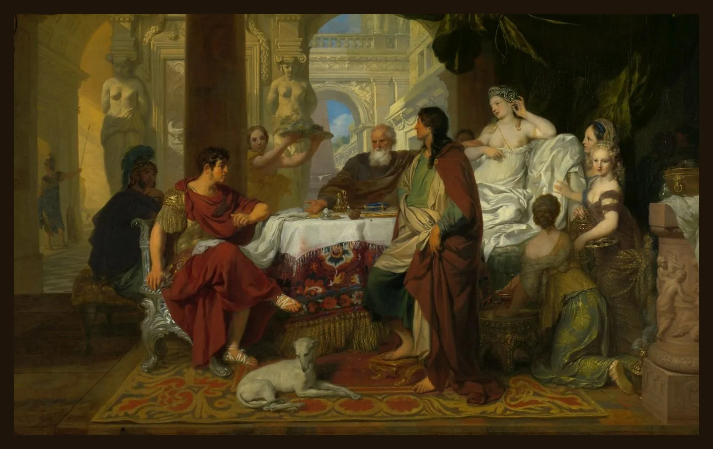

Embrace the Renaissance: Where Art Transcends Time and Ignites the Soul
Explore the Renaissance. Experience the art. Discover RenArt Gallery.

At RenArt Gallery, we invite you to embark on a journey through the captivating world of art. Our gallery is dedicated to showcasing exquisite masterpieces, mostly from the Renaissance period, allowing art enthusiasts and history lovers to immerse themselves in the beauty, elegance, and timeless allure of this remarkable era.
A Gateway to the Renaissance Era
Our gallery serves as a bridge between the past and the present.
With a passion for preserving and sharing the cultural heritage of the Renaissance, RenArt Gallery curates a diverse collection of paintings that represent the richness and creativity of the period. From iconic portraits and religious scenes to stunning landscapes and still-life compositions, each artwork tells a story and captures the essence of the Renaissance spirit.